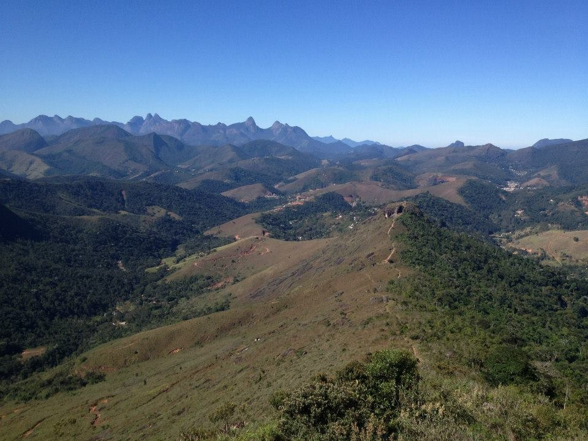
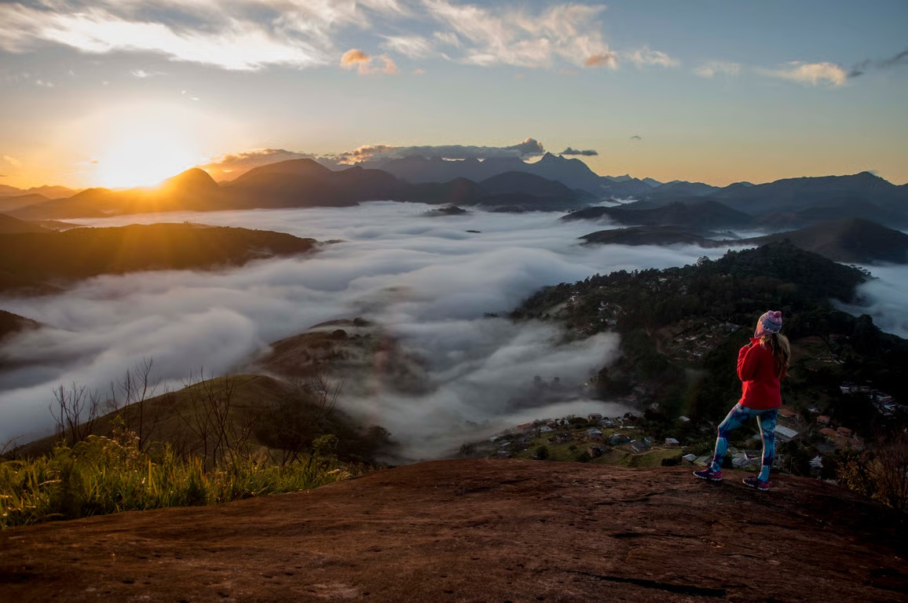
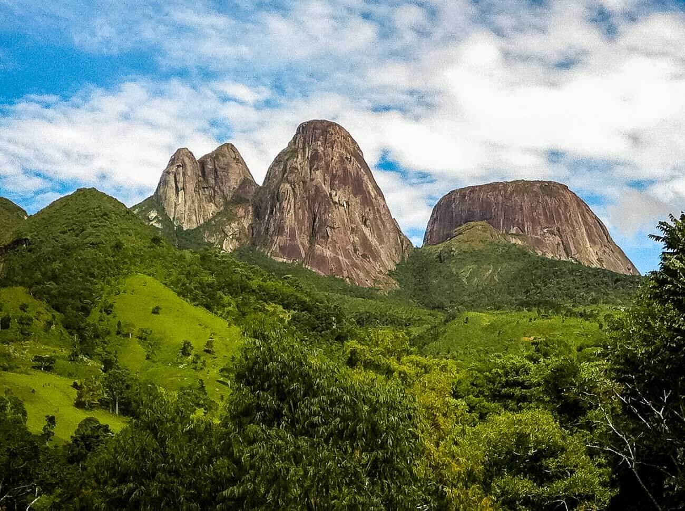
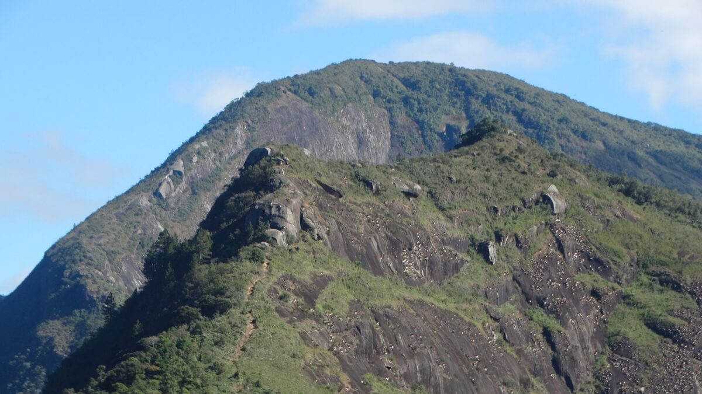
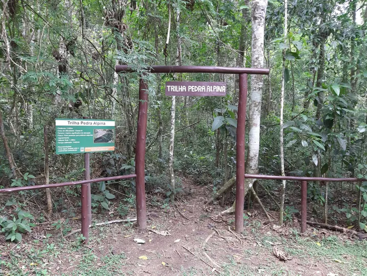
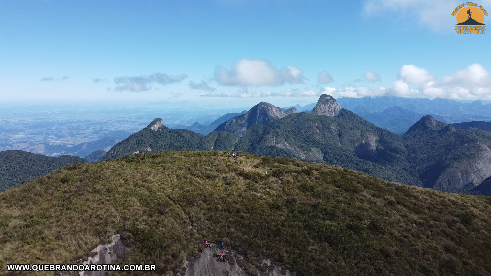

Principais Trilhas do Parque Natural Municipal Montanhas de Teresópolis
Pedra da Tartaruga



Trilha da Pedra da Tartaruga: O Mirante do 3º Distrito Localizada no Parque Natural Municipal Montanhas de Teresópolis, no núcleo Bonsucesso, a Pedra da Tartaruga é um dos destinos mais icônicos da Região Serrana. O nome é uma homenagem à própria natureza: uma formação rochosa imponente que, vista estrategicamente, desenha a silhueta perfeita de uma tartaruga gigante em meio ao verde da Mata Atlântica. A Experiência da Trilha: A caminhada é considerada de nível leve a moderado, sendo ideal para famílias e trilheiros iniciantes. O trajeto alterna entre áreas de sombra refrescante e trechos de descampado que revelam a biodiversidade local — não é raro avistar tucanos e gaviões sobrevoando a região durante a subida. Embora existam trechos de inclinação que exigem um pouco mais de fôlego, o caminho é bem demarcado e seguro. A Recompensa no Topo: Ao atingir o cume, a cerca de 1.180 metros de altitude, você é presenteado com uma das vistas mais amplas do estado. De um lado, a imponência da Mulher de Pedra e o Vale de Bonsucesso; do outro, a silhueta urbana de Teresópolis abraçada pelas montanhas. É o lugar perfeito para contemplar o pôr do sol ou observar as luzes da cidade acendendo ao anoitecer.
- Destaques e Aventura:
Dica EcoSerra: Não esqueça de levar água, protetor solar e, claro, recolher todo o seu lixo. Vamos preservar esse santuário!
Pedra do Camelo


A Pedra do Camelo é um dos monumentos geológicos mais curiosos e admirados de Teresópolis. Integrante do Parque Natural Municipal Montanhas de Teresópolis, esta formação rochosa imponente possui um formato singular que remete às corcovas de um camelo, tornando-se um marco visual inconfundível para quem explora a região da Granja Florestal e arredores. A Experiência da Trilha: A caminhada até a base e os mirantes da Pedra do Camelo possui um nível de dificuldade moderado, com trechos que exigem bom condicionamento físico e atenção ao terreno. O percurso atravessa áreas de Mata Atlântica preservada, oferecendo uma subida íngreme que recompensa o esforço com a pureza do ar e a proximidade com a fauna local. É uma trilha que proporciona uma verdadeira imersão na natureza, afastando o visitante do ritmo urbano em poucos minutos de caminhada. O Visual de Tirar o Fôlego: Ao atingir os pontos de observação da Pedra do Camelo, o trilheiro é presenteado com uma vista panorâmica de tirar o fôlego. De um lado, a visão detalhada da vizinha Pedra da Tartaruga; do outro, a imensidão das montanhas que compõem o Parque Estadual dos Três Picos e a Serra dos Órgãos. Estar diante dessa formação, a aproximadamente 1.447 metros de altitude, oferece uma perspectiva privilegiada sobre o relevo acidentado da região, criando um cenário perfeito para contemplação e registros fotográficos épicos.
- Destaques e Curiosidades:
Dica EcoSerra: Não esqueça de levar água, protetor solar e, claro, recolher todo o seu lixo. Vamos preservar esse santuário!
Pedra Alpina



A Pedra Alpina é um dos destinos mais contemplativos e preservados de Teresópolis. Situada no Núcleo Pedra Alpina do Parque Natural Municipal Montanhas de Teresópolis, esta elevação oferece uma experiência de montanhismo autêntica, longe das rotas mais movimentadas. É o local perfeito para quem busca conexão direta com a natureza e uma visão diferenciada da geografia acidentada que torna a Região Serrana tão única. A Experiência da Trilha: Com um nível de dificuldade moderado, a trilha da Pedra Alpina é caracterizada por uma subida constante em meio a uma vegetação densa e bem preservada. O percurso exige atenção ao terreno e calçados com boa aderência, especialmente em dias úmidos. Durante a caminhada, o trilheiro é envolvido pelo microclima da Mata Atlântica, encontrando pelo caminho diversas espécies de plantas epífitas e, com sorte, avistando pequenos mamíferos e aves típicas da altitude. O Visual de Tirar o Fôlego: Ao atingir o cume, a sensação é de estar em um mirante exclusivo voltado para o coração da serra. A vista descortina a beleza do Vale de Santa Rita e as imponentes paredes rochosas que cercam a cidade. O grande diferencial é a perspectiva lateral que se tem da Serra dos Órgãos e do Parque Estadual dos Três Picos, proporcionando um panorama que permite compreender a grandiosidade dos corredores ecológicos que protegem a biodiversidade local.
- Destaques e Curiosidades:
Dica EcoSerra: Não esqueça de levar água, protetor solar e, claro, recolher todo o seu lixo. Vamos preservar esse santuário!